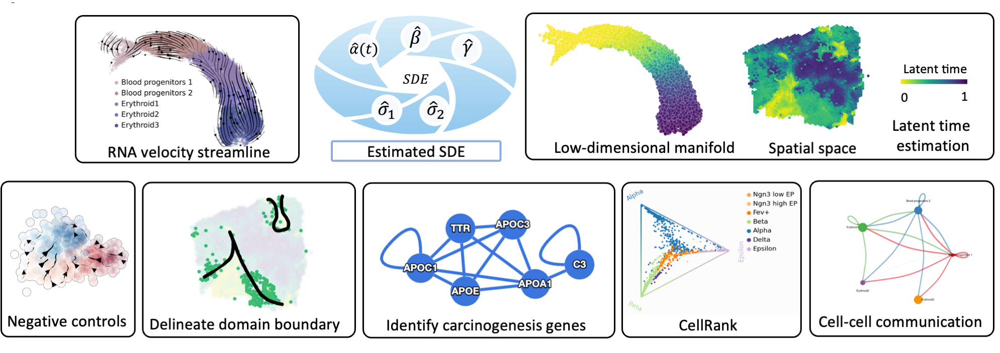

Overview of SDEvelo
SDEvelo: A Deep Generative Approach for Transcriptional Dynamics
SDEvelo represents a significant advancement in the analysis of single-cell RNA sequencing (scRNA-seq) data, offering a novel approach to inferring RNA velocity through multivariate stochastic differential equations (SDE).
Workflow and Downstream Analysis

The above image illustrates the workflow of SDEvelo, from input data to the generation of RNA velocity estimates.
This image showcases the various downstream tasks and analyses that can be performed using the results from SDEvelo.
Key Features
SDEvelo offers several unique features and advantages:
Multivariate stochastic modeling: Captures the complex, stochastic nature of transcriptional dynamics across multiple genes simultaneously.
Cell-specific latent time estimation: Provides a more accurate representation of cellular progression through biological processes.
Versatile applicability: Suitable for both scRNA-seq and sequencing-based spatial transcriptomics data.
Computational efficiency: Designed to be scalable for large datasets.
Carcinogenesis detection: Demonstrates high accuracy in identifying cancerous processes.
Facilitation of downstream analyses: Enables a wide range of biological discoveries through its comprehensive output.
Addressing Limitations in Existing Methods
RNA velocity analysis has revolutionized scRNA-seq studies by allowing the reconstruction and prediction of directed trajectories in cell differentiation and state transitions. However, most existing methods rely on ordinary differential equations (ODE) to model individual genes sequentially. This approach can lead to erroneous results as it fails to fully capture the intrinsically stochastic nature of transcriptional dynamics governed by a cell-specific latent time across multiple genes.
SDEvelo’s Unique Approach
SDEvelo addresses these limitations by:
Employing multivariate stochastic differential equations (SDE) to model the dynamics of unspliced and spliced RNAs.
Explicitly modeling the inherent uncertainty in transcriptional dynamics.
Estimating a cell-specific latent time across genes, providing a more holistic view of cellular processes.
By integrating these advanced modeling techniques, SDEvelo offers a more accurate and comprehensive approach to understanding cell differentiation and state transitions in scRNA-seq studies.